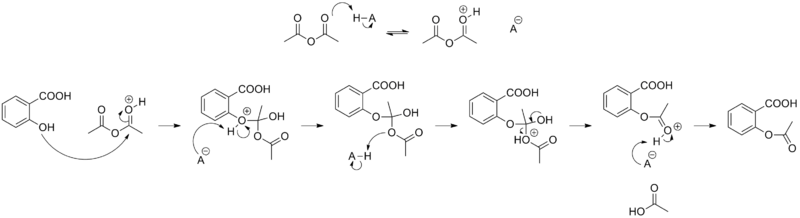
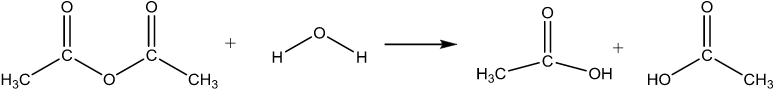

Aspirin
Salicin, a glycoside of salicylic acid present in the leaves and bark of willow trees, has been used for centuries in a variety of herbal remedies. In vivo, it is converted into salicylic acid which acts to reduce inflammation and lower the temperature of patients suffering from fever. Salicylic Acid is o-hydoxybenzoic acid.
Salicylic acid itself is unsuitable as a drug since large doses have an unpleasant taste and also cause gastric irritation. These problems were largely overcome by the introduction of acetylsalicylic acid (aspirin) by the German company Bayer in 1899. Aspirin is an ester which passes through the stomach unchanged before being hydrolysed by the basic medium of the intestine to form the active compound.

The esterification reaction(a carboxylic acid reacts with an alcohol), is slow and as soon as the products begin to form, the reverse reaction, hydrolysis, begins. An equilibrium is finally attained with all reactants and products present.
RCOOH + R'OH ⇌ RCOOR' + H2O
At 20 °C the rate of reaction in both the forward and the backward directions is slow and it takes many days to attain equilibrium. This is overcome by heating the mixture. Doing this increases the rate of both the forward and reverse reactions, thus achieving the equilibrium state much faster. In addition, the value of K at room temperature is typically only about 10; i.e. the reaction does not go to completion and the yield of the desired product will not be very high.
An alternative method for the preparation of esters is to treat the alcohol with a reactive carboxylic acid derivative, for example the carboxylic acid anhydride or acid chloride. These reactions are effectively irreversible. They are also rapid, particularly when catalysed by strong acids.
(RCO)2O + R'OH ⇌ RCOOR' + RCOOH
or
RCOOl + R'OH ⇌ RCOOR' + HCl
The synthesis of aspirin is classified as an esterification reaction. Salicylic acid is treated with acetic anhydride, an acid derivative, causing a chemical reaction that turns salicylic acid's hydroxyl group into an ester group (R-OH → R-OCOCH3). This process yields aspirin and acetic acid, which is considered a byproduct of this reaction. Small amounts of sulfuric acid (and occasionally phosphoric acid) are almost always used as a catalyst. This method is commonly employed in undergraduate teaching labs.
Mechanism
Phosphoric acid is added as a catalyst. It is a strong acid (pKa ~2.1) and the re are many available protons. Concentrated phosphoric acid is 85% wt H3PO4 in water.
H3PO4 ⇌ H+ + H2PO4-
The synthesis is acid catalyzed. First there is a reversible reaction in which the oxygen of the carbonyl of the acetic anhydride is protonated. This increases the electrophilicity of the carbon of that carbonyl. The oxygen of the phenol is much more nucleophilic than the oxygen of the carboxylic acid. The oxygen of the phenol group acts as a nucleophile and attacks the carbon of the carbonyl within acetic anhydride and simultaneously breaks the π bond to oxygen. This forms a tetrahedral intermediate.
The electrons on the oxygen of the hydroxyl group on the tetrahedral intermediate, ultimately come down and reform a carbonyl group, this simultaneously induces an acetic acid to leave. After one additional proton transfer, the final aspirin is formed.
After the reaction is complete, water is a dded to quench (destroy) any remaining acetic anhydride and turn it into acetic acid.
Solubility
Both salicylic Acid and aspirin are slightly soluble in water at room temperature (~0.2 g/100mL). A minimum of water needs to be used in order to induce the product aspirin to precipitate out of solution as a solid. The solution will be iced after crystals start to form to reduce solubility of the product in the water further and increase the percent yield.